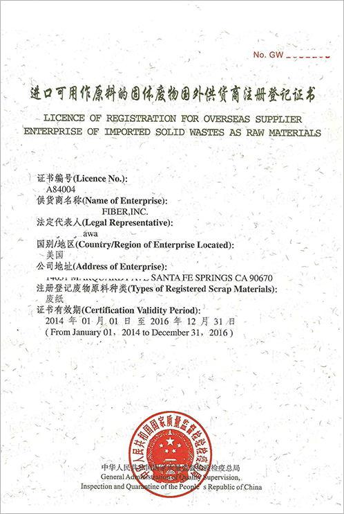

AQSIQ证书新申请注册需要提供材料
（一）注册登记申请书。
（二）经公证的税务登记文件，有商业登记文件的还需提供经公证的商业登记文件。
（三）组织机构、部门和岗位职责的说明。
（四）标明尺寸的固定办公场所平面图，有加工场地的，还应提供加工场地平面图，能全面展现上述场 所、场地的视频文件或者3张以上照片。
（五）ISO9001质量管理体系或者RIOS体系等认证证书彩色复印件及全套体系文件及记录表格。
注：证书变更、延续等业务可登陆我司网站或者直接与我们电话/微信联系。